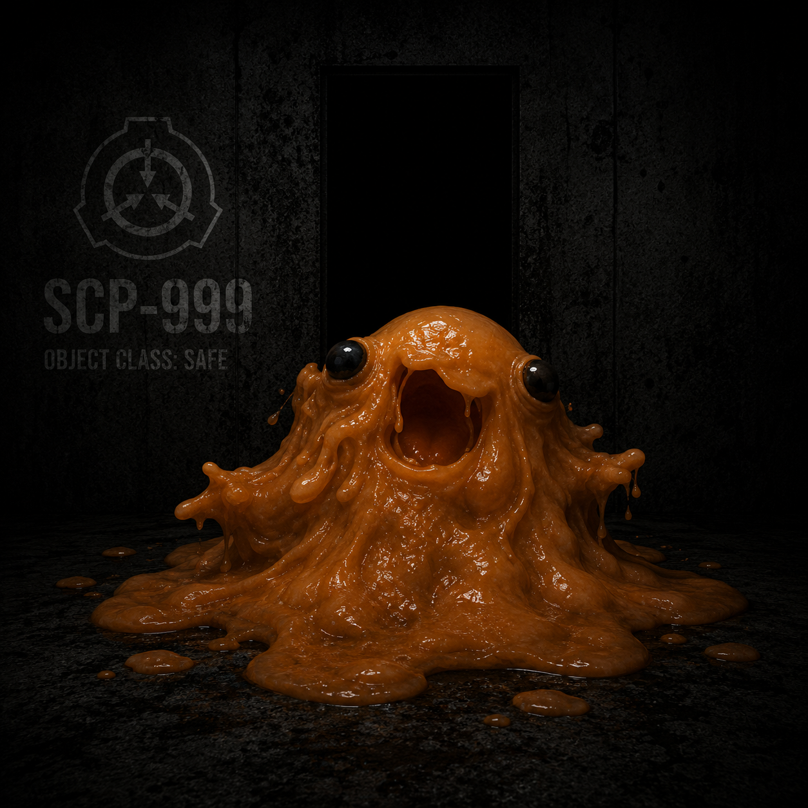

Containment Procedures
SCP-999 is to be contained in a standard humanoid containment chamber at Site-19. The chamber is to be furnished with soft toys, blankets, and other comforting items. Direct interaction with SCP-999 is encouraged for personnel experiencing psychological distress. All interactions with SCP-999 must be logged and reviewed by Site Psychological Services. In the event of a containment breach, SCP-999 is to be lured back using pleasant sounds and treats.
Description
SCP-999 appears as a large, amoeboid mass of translucent slime, constantly shifting and changing shape. It emits a faint, sweet odor reminiscent of chocolate or candy. When it comes into contact with human skin, it induces a tingling sensation followed by uncontrollable laughter and feelings of euphoria. The effect typically lasts for several minutes to an hour, depending on the duration of contact.
Additional notes: SCP-999 has shown no signs of aging or degradation since initial containment. Psychological evaluations indicate a childlike mentality and a strong desire to bring happiness to others. It has been used in controlled tests to alleviate symptoms of depression and anxiety in D-class personnel.